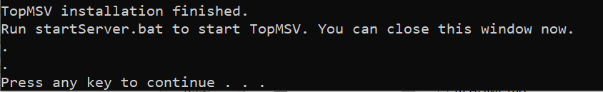

TopMSV Server Setup Guide
1. Install Node.js
- Go to the Node.js website
- Click download button to download the installation file. The version number may be different.

- Double click the downloaded file "node-v14.17.0-x64.msi" to install it. (The numbers may be different)

- Follow the instructions of the setup wizard to finish installation.
2. Start TopMSV Server
- (First Time Only) Right click "installServer.bat" and select "Run as administrator."

When the messages below are displayed, proceed to the next step.

- Double click "startServer.bat". From the second time, you only need to run this file to use TopMSV Server. A chrome browser will open when TopMSV Server is ready.

- When finished using TopMSV Server, double click "stopServer.bat" to close TopMSV Server.